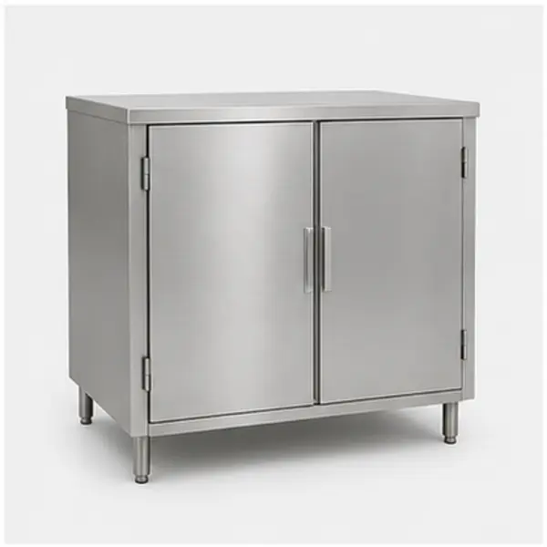
01Armário inox com portas
Linha de armários para cozinha industrial e áreas de preparo.
Seleção de produtos
Escolha o item desejado e siga direto para a aba de orçamento.
Selecione um produto para preencher o formulário automaticamente.

01Linha de armários para cozinha industrial e áreas de preparo.
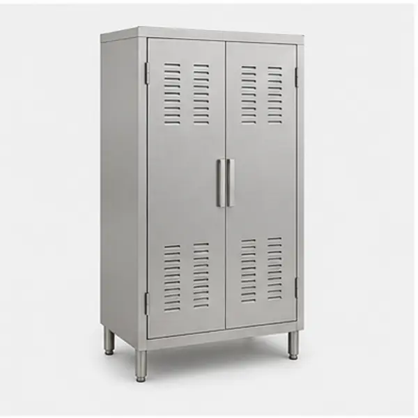
02Opção para armazenamento com estrutura metálica e fechamento alto.
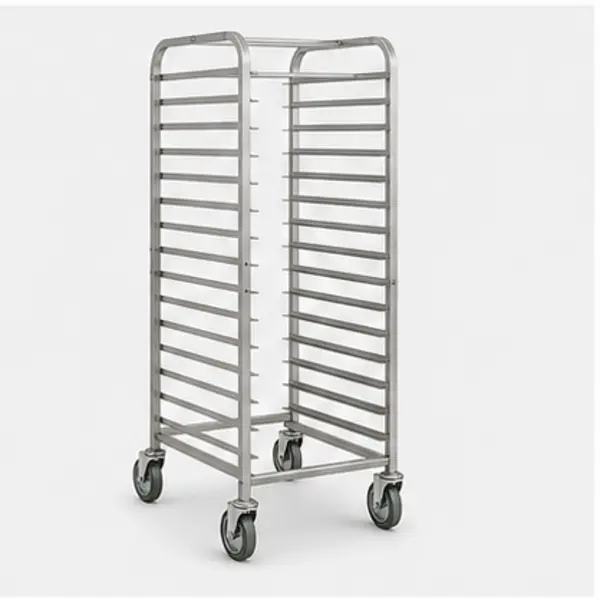
03Carro para bandejas e apoio de produção em padarias e cozinhas.
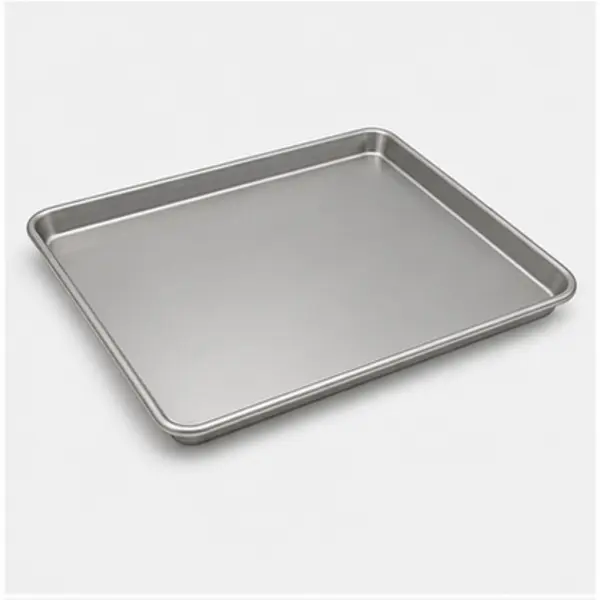
04Assadeira metálica para produção e preparo de alimentos.
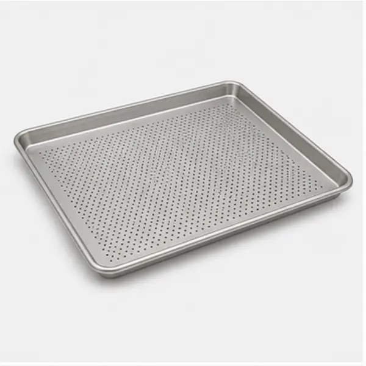
05Bandeja perfurada para panificação e processos com circulação de calor.
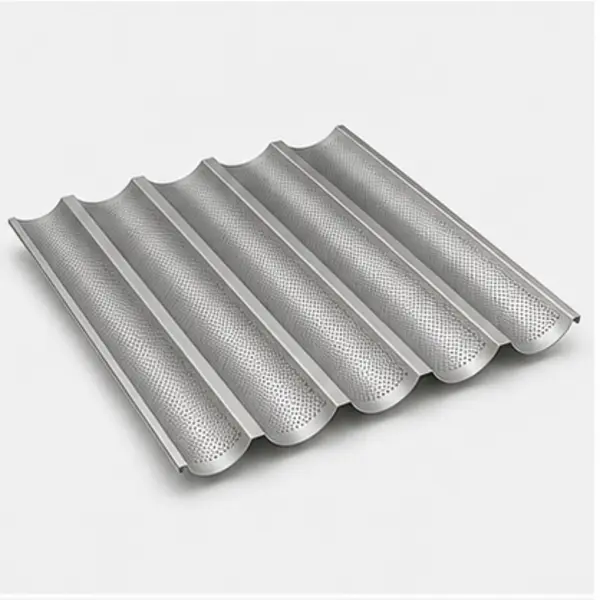
06Forma para produtos padronizados e linhas de panificação.
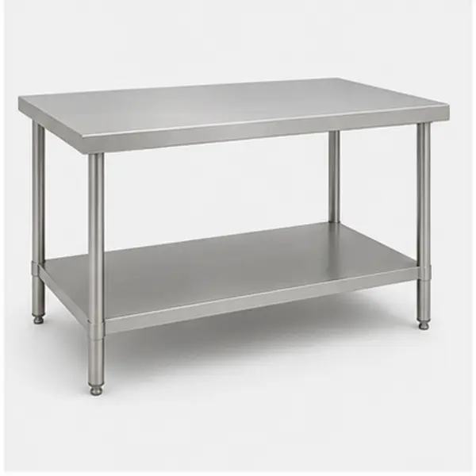
07Mesa de trabalho para preparo, apoio e organização operacional.
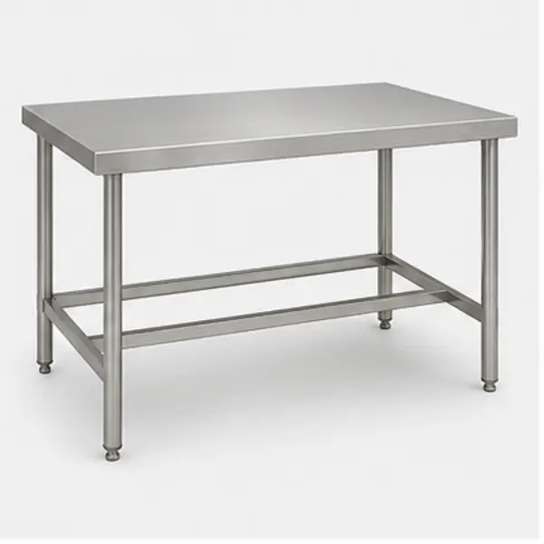
08Bancada robusta para cozinha industrial e área de manipulação.
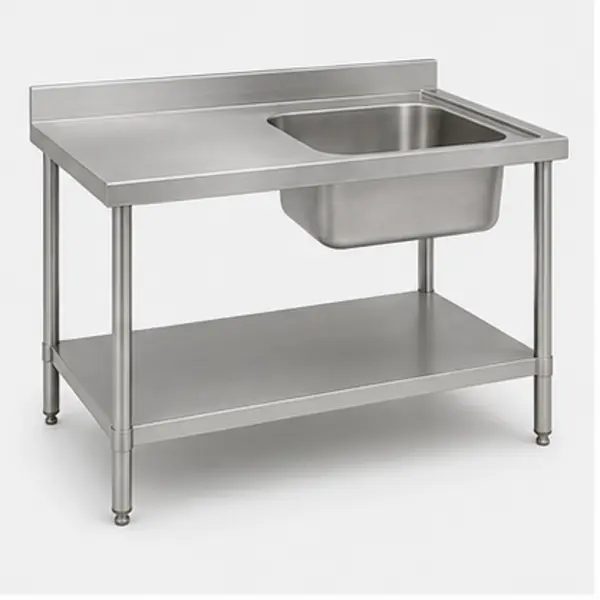
09Mesa inox com cuba para higienização e preparo.
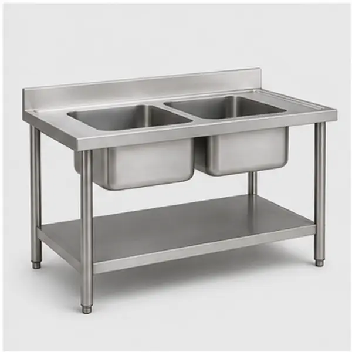
10Bancada inox para lavagem e apoio em rotina de produção.
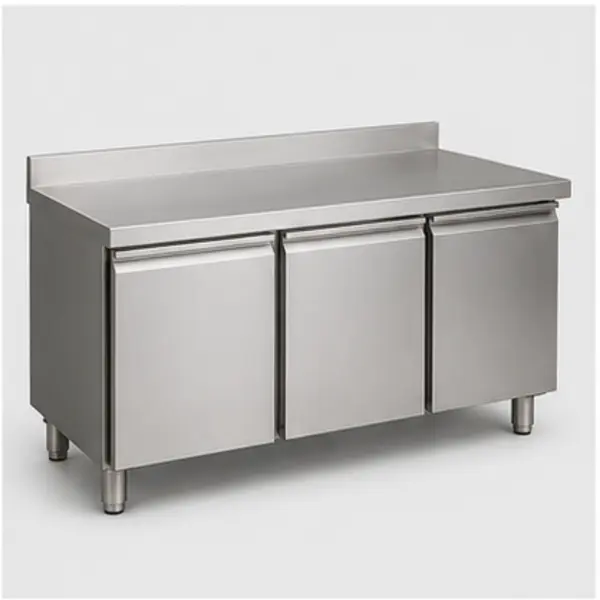
11Balcão de apoio com fechamento para armazenamento e organização.
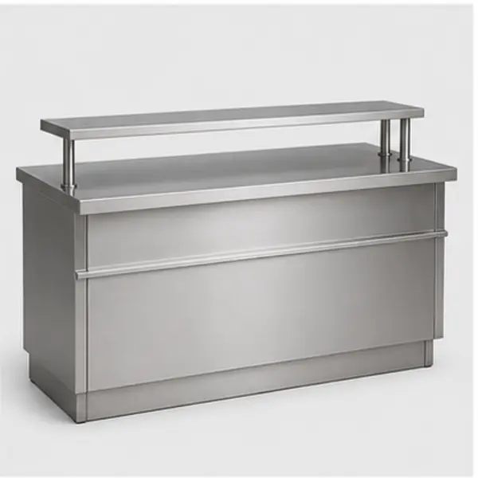
12Módulo para apoio, exposição e atendimento em área comercial.
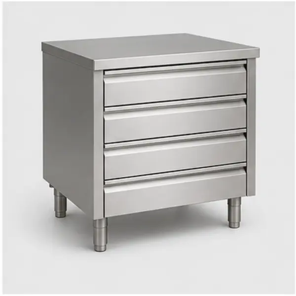
13Módulo de gavetas para organização de utensílios e insumos.
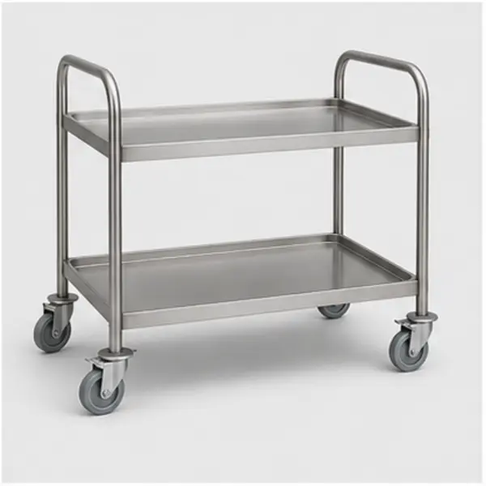
14Carrinho inox para movimentação interna de produtos e utensílios.
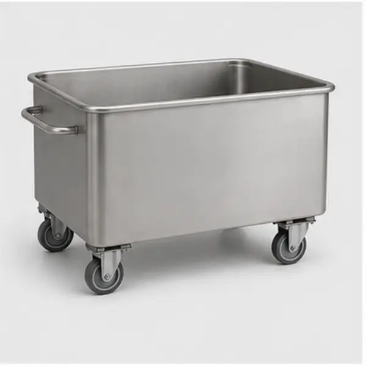
15Cuba móvel para preparo, lavagem e manipulação de alimentos.
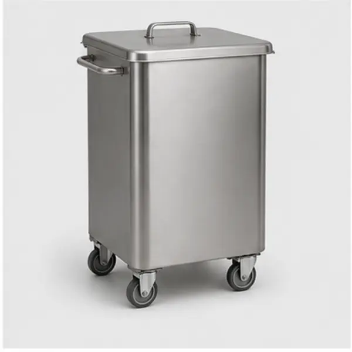
16Lixeira profissional para ambiente de produção alimentícia.
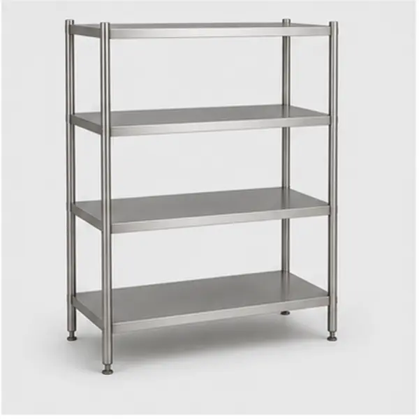
17Estante para armazenamento, organização e apoio de produção.
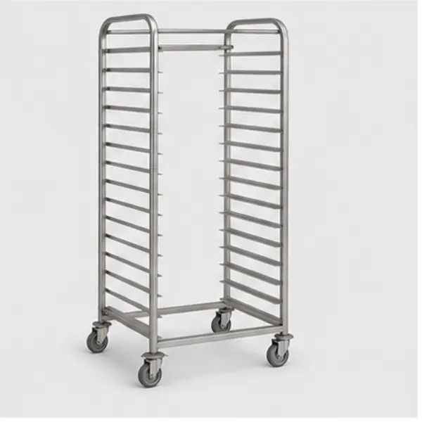
18Estrutura para acomodar bandejas e otimizar o fluxo de trabalho.
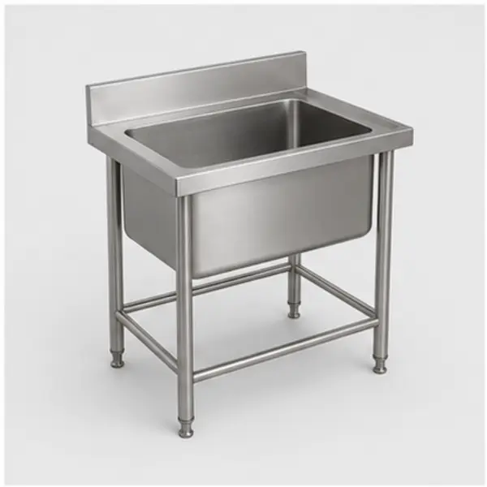
19Cuba inox para uso em preparo, limpeza e suporte de cozinha.
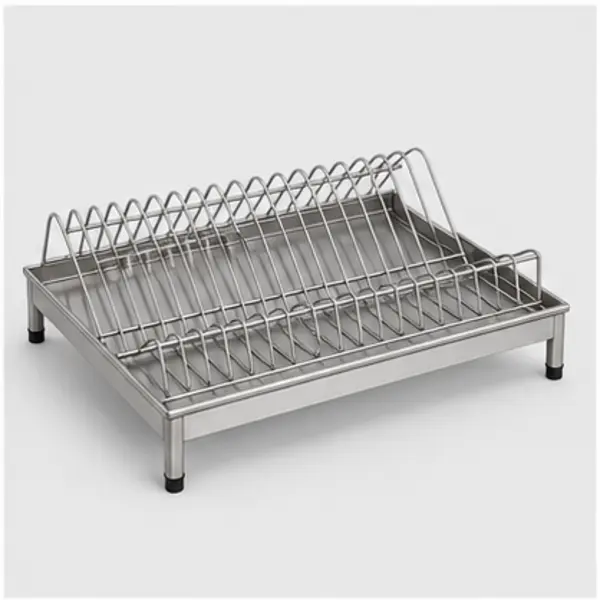
20Módulo para escorrer utensílios e organizar a área de lavagem.
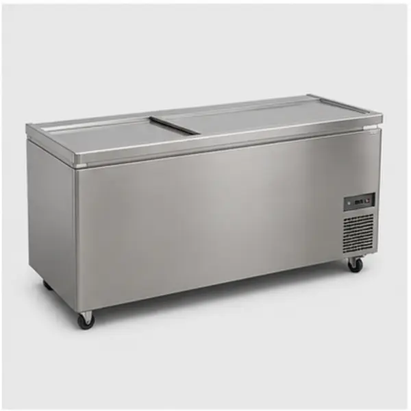
21Equipamento de refrigeração para bebidas, alimentos e insumos.
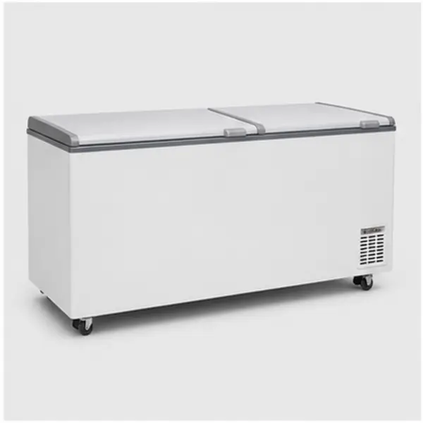
22Freezer para conservação de produtos em área comercial ou industrial.
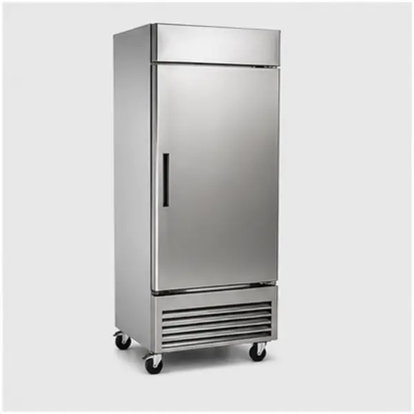
23Modelo vertical para congelamento e organização de produtos.
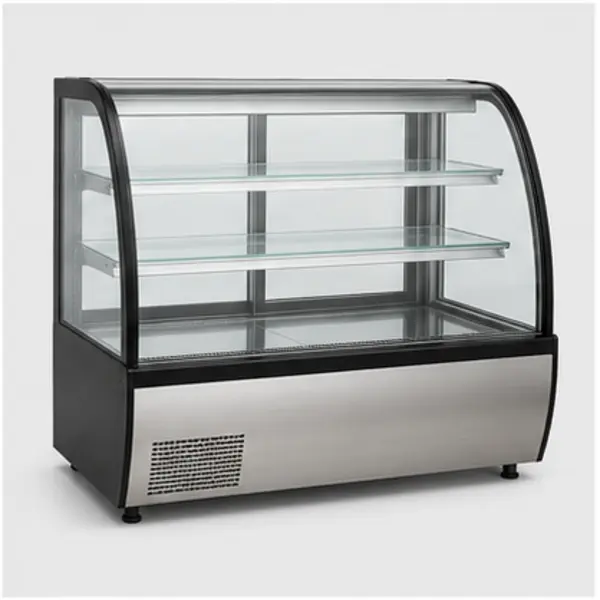
24Vitrine para exposição e conservação de alimentos.
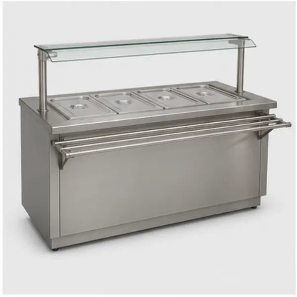
25Linha de buffet e exposição para alimentos prontos.
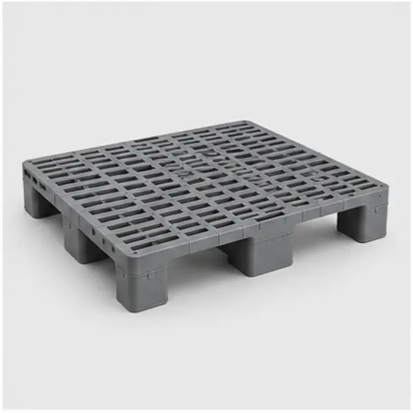
26Estrado para apoio, afastamento do piso e organização de estoque.
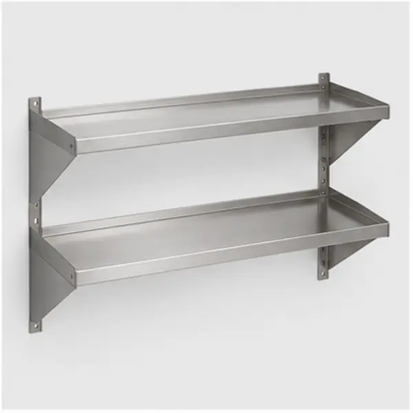
27Prateleira para estoque, cozinha e organização operacional.